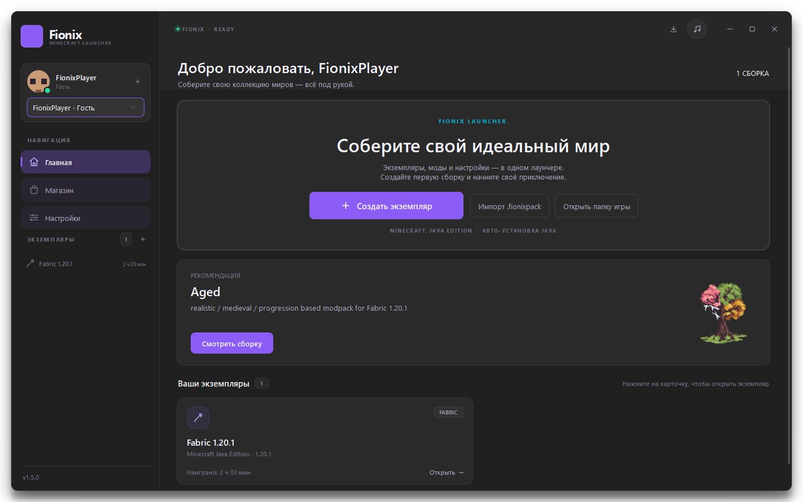
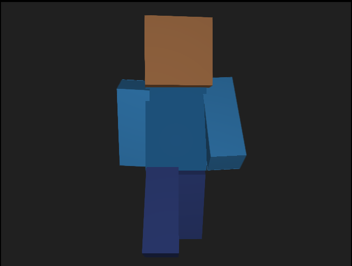

2 каталога
Магазин сборок прямо в лаунчере
Ищите модпаки на Modrinth и CurseForge, смотрите автора, загрузки, версию игры и список модов. Установка сразу создаёт отдельный экземпляр.
Аккаунты Microsoft, LittleSkin, Ely.by и гостевой режим. Магазин Modrinth и CurseForge, умные сборки, 3D-скины и полная кастомизация — в одном лаунчере для Windows.

От первого входа в аккаунт до запуска собственной сборки — Fionix закрывает рутину и оставляет вам саму игру.
Ищите модпаки на Modrinth и CurseForge, смотрите автора, загрузки, версию игры и список модов. Установка сразу создаёт отдельный экземпляр.
Один чекбокс добавляет проверенный набор модов для стабильного FPS. Без галочки Fionix не скачает ничего лишнего.
Загрузите PNG — Fionix покажет базовый и внешний слой одежды с анимацией ходьбы. Скины LittleSkin и Ely.by подтянутся сами.

Вращение · масштабMicrosoft, LittleSkin, Ely.by и гостевой профиль. Переключайтесь между ними в сайдбаре без повторного входа.
Акцентный цвет, собственные цвета текста и панелей, авто-контраст, картинка или MP4-видео до 10 МБ на фоне.
Экспорт в .fionixpack и импорт в изолированный экземпляр.
Моды скачаются последовательно — получателю не придётся собирать всё вручную.
Версии, модпаки и импорт выполняются в фоне. Прогресс и скорость видны в отдельной панели, а лаунчер можно свернуть в трей.
Если игра упала, Fionix покажет лог и предложит спросить у ИИ. Следит за RAM, предупредит при нехватке памяти, а встроенный плеер скрасит ожидание загрузки.
Никаких рендеров — только настоящий интерфейс Fionix. Нажмите на любой экран, чтобы открыть его во весь размер.
Клик — полноэкранный просмотр. Стрелки и Esc работают с клавиатуры.
Fionix 1.5 для Windows 10/11. Установите лаунчер, войдите в аккаунт и создайте первую сборку — остальное Fionix сделает сам.
Minecraft не входит в установщик.